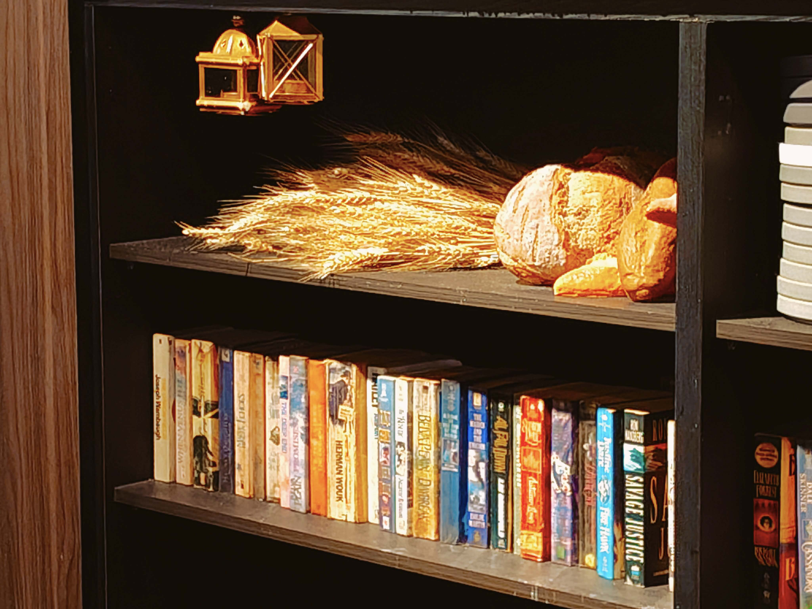
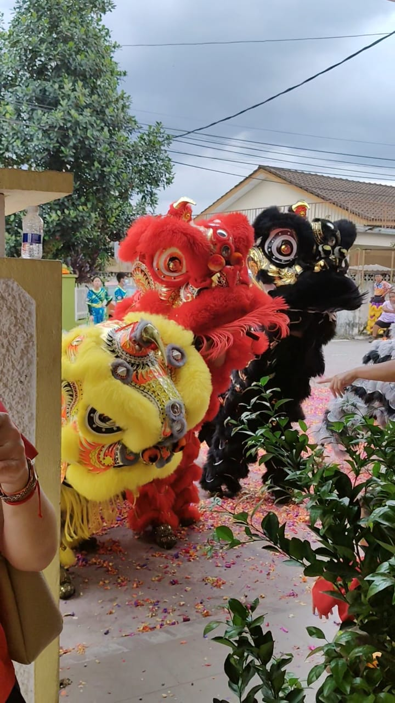
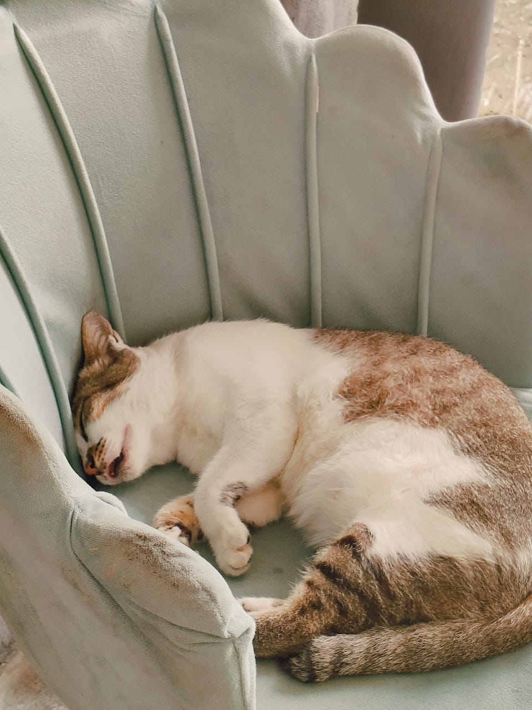
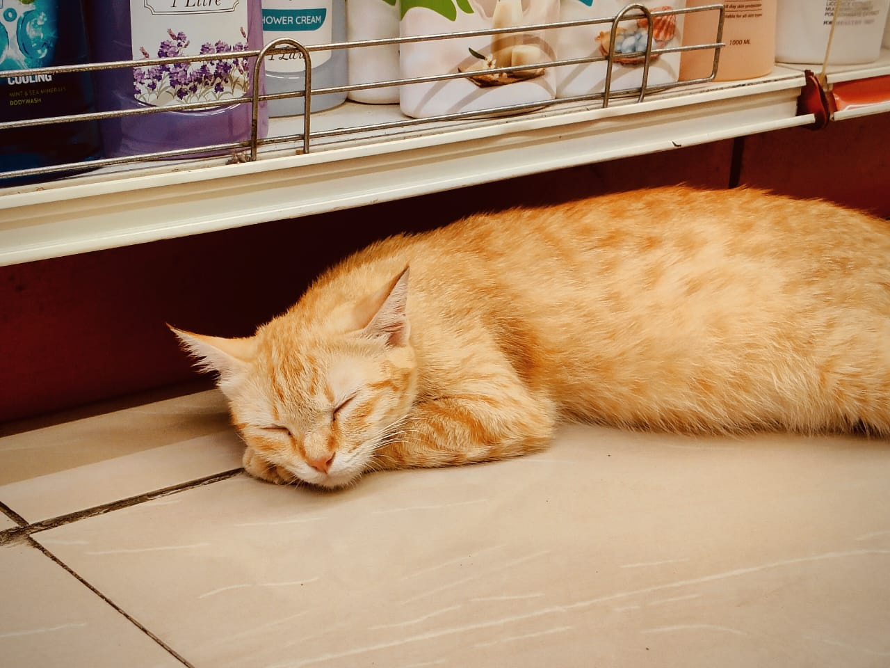
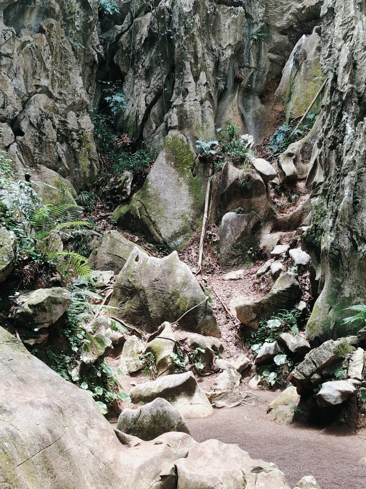

One Angle in Breakfast Spot Cafe

The overall style is vintage.
This photography journal documents everyday visual moments in Kuala Lumpur, including cafe interiors, gathering environments, and urban details observed during university life.

The overall style is vintage.

The Chinese New Year is invariably marked by lion dances.

The afternoon weather is mild, perfect for a nap.

The public's tolerance for cats is remarkably high—they can even be found napping in supermarkets.

This distinctive rock is a must-visit spot for visitors to snap photos and take selfies.